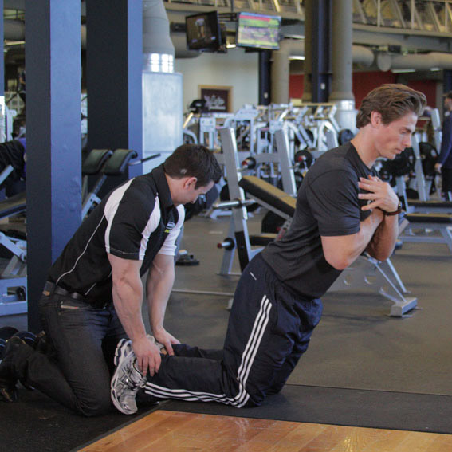

<!DOCTYPE html PUBLIC "-//W3C//DTD XHTML 1.0 Strict//EN" "http://www.w3.org/TR/xhtml1/DTD/xhtml1-strict.dtd">
<!--
Design by Free CSS Templates
http://www.freecsstemplates.org
Released for free under a Creative Commons Attribution 2.5 License

Name       : Open-Air
Description: A two-column, fixed-width design with dark color scheme.
Version    : 1.0
Released   : 20120818

-->
<html xmlns="http://www.w3.org/1999/xhtml"/>
<?php
session_start();
include('mygymdbConnect.php');
include('SignUp.php');
?>
<html>
    <head>
        <title> MyGym</title>
        <div style="position :absolute;top:20px;left:40px">
            <p><h2>MY<br/> 
                    GYM 
                    <br/></h2></p></div>
        <div style="position: absolute ;left:  200px; top: 20px;"> </div>
        <div style="position:absolute;top:37%;left:35%"/>
        <link href="http://fonts.googleapis.com/css?family=Oswald:400,300" rel="stylesheet" type="text/css" />         

        <link href="style.css" rel="stylesheet" type="text/css" media="screen" />
        <a href="home.php" style="text-decoration: none;color: black;font:serif;font-weight: bold;  ">Home |</a>
        <a href="About.html" style="text-decoration: none;color: black;font:serif;font-weight: bold;  ">About |</a>
        <a href="sign up.html" style="text-decoration: none;color: black;font:serif;font-weight: bold;  ">Sign up |</a>
        <a href="Activities.html" style="text-decoration: none;color: black;font:serif;font-weight: bold;  ">Activities |</a>
        <a href="Trainers.html" style="text-decoration: none;color: black;font:serif;font-weight: bold;  ">Trainers |</a>
        <a href="classes.html" style="text-decoration: none;color: black;font:serif;font-weight: bold;  ">Classes |</a>
        <a href="Training.html" style="text-decoration: none;color: black;font:serif;font-weight: bold;  ">Train |</a>   

    </head>

    <body>
        <div style="position: absolute;left: -300px">
            <table  cellpadding="10" cellspacing="10" height="400px" width="1200px">
                <tr><td></img></td>
                    <td><b>Description</b>
                        <br>
                        </br>n human anatomy, the hamstring is a group of tendons contracted by three posterior thigh muscles (semitendinosus, semimembranosus and biceps femoris) that make up the borders of the space behind the knee, or their corresponding tendons.
                        In quadrupeds, it is the single large tendon found behind the knee or comparable area.The hamstrings cross and act upon two joints - the hip and the knee.
                        Semitendinosus and semimembranosus extend the hip when the trunk is fixed; they also flex the knee and medially (inwardly) rotate the lower leg when the knee is bent.
                    </td>
                </tr>
            </table>
        </div>
        <div style="position: absolute;left: -200px;top: 500px" >
            <table border="2"  cellpadding="10" cellspacing="10" align="center">
                <tr><td><b>EXERCISES</b></td></tr>
                <tr><td></img></br>
                        </img></td>
                    <td><b>90/90 Hamstring</b>
                        </br>1-Lie on your back, with one leg extended straight out.
                        </br>2-With the other leg, bend the hip and knee to 90 degrees. You may brace your leg with your hands if necessary. This will be your starting position.
                        </br>3-Extend your leg straight into the air, pausing briefly at the top. Return the leg to the starting position.
                        </br>4-Repeat for 10-20 repetitions, and then switch to the other leg.
                    </td>
                </tr>
                <tr><td></img></br>
                        </img></br>
                        </img></td>
                    <td><b>Alternating Hang Clean</b>
                        </br>1-Place two kettlebells between your feet. To get in the starting position, push your butt back and look straight ahead.
                        </br>2-Clean one kettlebell to your shoulder and hold on to the other kettlebell in a hanging position. Clean the kettlebell to your shoulder by extending through the legs and hips as you pull the kettlebell towards your shoulders. Rotate your wrist as you do so.
                        </br>3-Lower the cleaned kettlebell to a hanging position and clean the alternate kettlebell. Repeat.
                    </td>
                </tr>
                <tr><td></img></br>
                        </img></br>
                        </img></td>

                    <td><b>Clean Deadlift</b>
                        </br>1-Begin standing with a barbell close to your shins. Your feet should be directly under your hips with your feet turned out slightly. Grip the bar with a double overhand grip or hook grip, about shoulder width apart. Squat down to the bar. Your spine should be in full extension, with a back angle that places your shoulders in front of the bar and your back as vertical as possible.
                        </br>2-Begin by driving through the floor through the front of your heels. As the bar travels upward, maintain a constant back angle. Flare your knees out to the side to help keep them out of the bar's path.
                        </br>3-After the bar crosses the knees, complete the lift by driving the hips into the bar until your hips and knees are extended.
                    </td>
                </tr>
                <tr><td>
                        </img></br>
                        </img></br> 
                        </img></br>
                        </img></br>
                    </td>
               
                    <td><b>Floor Glute-Ham Raise</b>
                        </br>1-You can use a partner for this exercise or brace your feet under something stable.
                        </br>2-Begin on your knees with your upper legs and torso upright. If using a partner, they will firmly hold your feet to keep you in position. This will be your starting position.
                        </br>3-Lower yourself by extending at the knee, taking care to NOT flex the hips as you go forward.
                        </br>4-Place your hands in front of you as you reach the floor. This movement is very difficult and you may be unable to do it unaided. Use your arms to lightly push off the floor to aid your return to the starting position.
                    </td>
                </tr>
            </table>
        </div>
    </body>
</html>